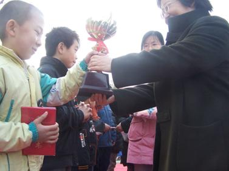

五子文化与知识(四)：国家立项 前途无量
#1 五子文化与知识(四)：国家立项 前途无量 作者：刺青 发表时间：2010-3-1 10:48:15
中国棋院在线讯 《五子棋知识》第三章主要讲述了五子棋二十年前重返中国后经过一系列普及开展工作，项目得到了迅猛发展，详见如下内容。四、国家立项 前途无量
(一)国家立项
国家能够把五子棋立项，离不开五子棋爱好者群体的努力，更离不开国家体育总局棋牌运动管理中心(中国棋院)按照“扩大基础面，加强专业性，逐步规范化”的原则，对五子棋项目进行的规范化管理。
2000年12月，中国棋院召开了非正式比赛棋类项目座谈会，包括五子棋在内的一些棋类项目负责人和发明人，汇集在中国棋院，与棋院领导和有关负责人，就这些非正式比赛项目的普及和发展方向、模式等问题进行了初步的探讨。
2001年，国家体育总局批准中国棋院试办全国性五子棋赛。2002年8月，中国棋院在北京举办了首届五子棋邀请赛，来自全国各地的170多名选手参赛。截至2008年底，国家体育总局棋牌运动管理中心(中国棋院)共举办全国性五子棋赛10届，其中个人赛7届，团体赛2届，青少年赛1届。
国家体育总局棋牌运动管理中心(中国棋院)在此期间还举办了一些中外和内地地方性的交流活动，如：首届中国-韩国连珠团体交流赛；“龙潭杯”首届小学生五子棋团体对抗赛等。

【图5：光明小学在龙潭杯赛上捧杯】
2002年，中国棋院组织部分有经验的五子棋裁判员和部分棋手共同编写了《中国五子棋竞赛规则》(以下简称《规则》)，2003年始在全国发行。在2009年对原版《规则》进行补充、修改和完善后再版发行。
国家体育总局棋牌运动管理中心(中国棋院)还多次举办全国五子棋裁判培训班，加深裁判员对《规则》的理解和认识，使之熟悉《规则》，并运用《规则》执裁。经过学习和实践，已初步建立了一只精干的五子棋裁判员队伍。
2003年10月，国家体育总局棋牌运动管理中心(中国棋院)颁布了《中国五子棋段级位制》，向规范化管理五子棋方向上迈出了重要的一步。
2004年，经国家体育总局批准，中国围棋协会五子棋分会成立。
2006年2月，五子棋被国家体育总局列为国家正式开展的体育项目。
五子棋被国家立项，是中国五子棋运动发展史上的里程碑。是中国古代棋文化的灿烂之光绽放出的新时代的辉煌；是曾汇集在五子直连下五子棋爱好者群体共同构筑的梦想；是对近十几年来为竞技五子棋在中国大地上的发展而付出巨大努力的爱好者们的最好评价；是国家体育总局棋牌运动管理中心(中国棋院)规范化管理五子棋项目所结的硕果；是把五子棋项目引向健康发展轨道的新起点。
(二)可喜的现状
国家立项和国家体育总局棋牌运动管理中心(中国棋院)对五子棋项目的规范化管理，使中国五子棋爱好者数量不断增加，棋手水平不断提高，竞赛逐步专业化、规范化、系统化，现状喜人，前途无量。
截至2008年年底，北京、上海、天津、浙江等地分别建立了五子棋工作委员会，河北廊坊、秦皇岛、黑龙江大庆、辽宁铁岭、浙江三门、台州、吉林四平、广西柳州等地建立了五子棋协会或五子棋分会。还有一些地区协会或分会等组织在筹建中。
五子棋俱乐部在全国各地不断涌现。如：北京的“那威连珠五子棋俱乐部”，河北的“秦皇岛快乐连珠俱乐部”，“浙江弈缘五子棋俱乐部”，“河北省妙手连珠五子棋俱乐部”等。“那威连珠五子棋俱乐部”成立得最早，多年来，一直作为民间组织和国际连珠联盟保持联系。“河北省妙手连珠五子棋俱乐部”的负责人郑秋，她领导的五子棋俱乐部，在与企业联手，在把五子棋纳入市场化、产业化